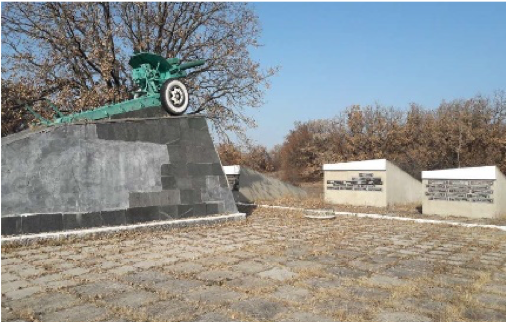
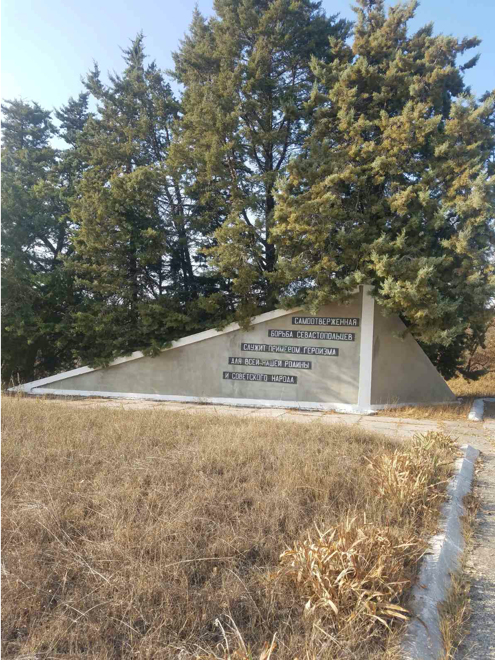
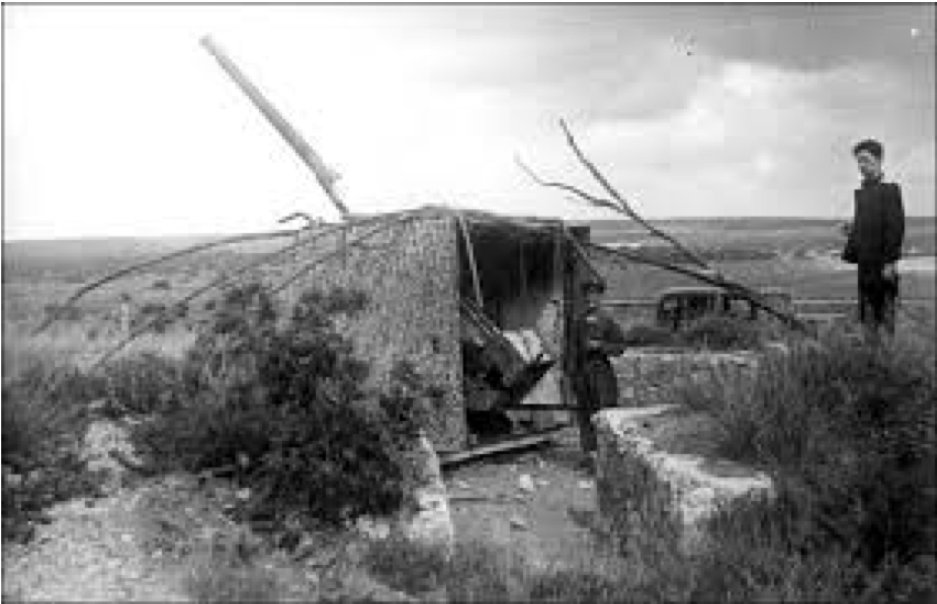
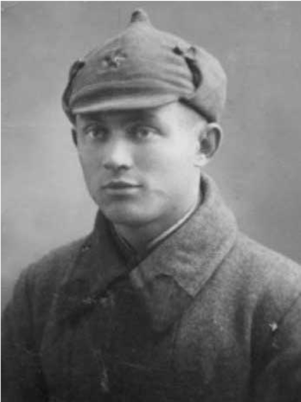
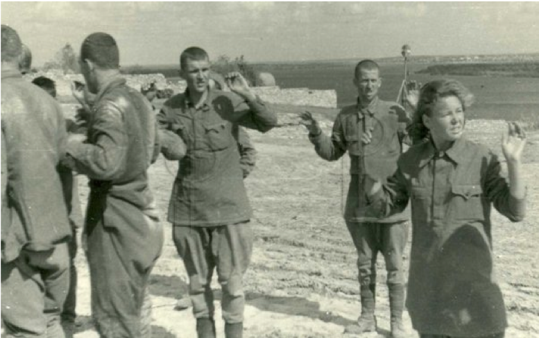
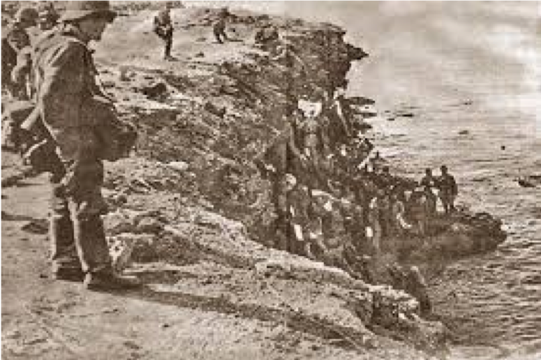

Памятник сооружен по проекту севастопольца - преподавателя СПГУ Вержбицкого Н.Н.

Представляет собой комплекс из гаубицы 122 калибра и стелы с именами воинов . Перед памятником - мемориальная плита в виде раскрытой книги, на страницах которой высечены отзывы советской и зарубежной печати о героизме защитников Севастополя.

В июньских боях 1942 г. батареи полка вели огонь с плато Мекензиевых гор, уничтожая врагов прямой наводкой.

Младший лейтенант А. С. Умеркин - Герой Советского Союза, особенно отличился в боях.
Оставшиеся в живых воины полка получили приказ следовать в район 35-й батареи. Их судьба сложилась по-разному. К сожелению, некоторые папали в плен. Не многие дожили до Великой Победы.


Из протокола допроса И.Т. Малухина, рядового 134‑го гаубичного полка « 4 июля 1942 года при обороне Севастополяу Херсонского маякая в группе около 10 тысяч человек сдался в плен после дневного сопротивления и покуда были боеприпасы».